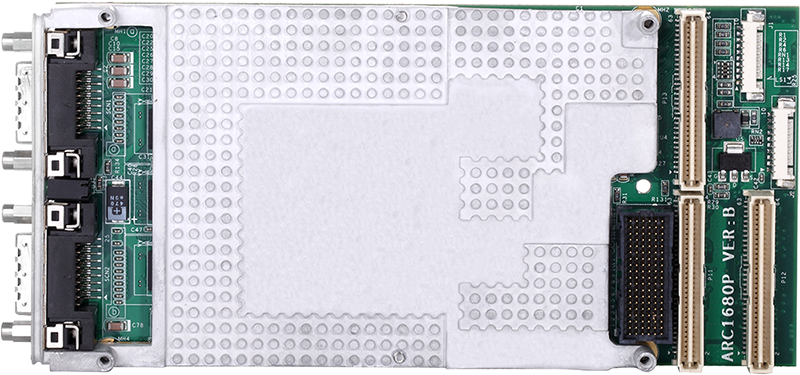
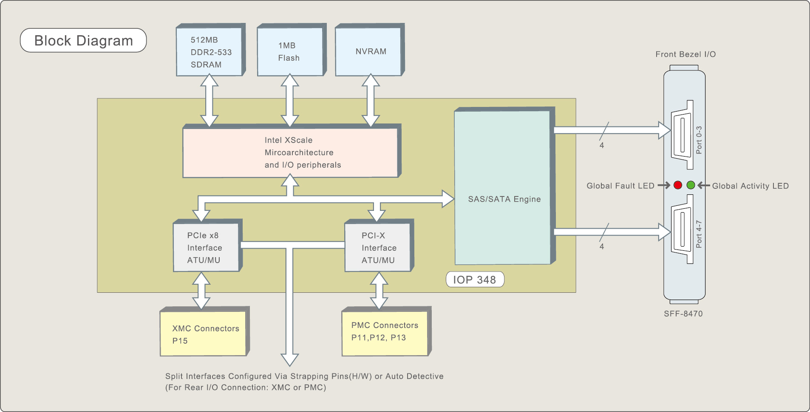

ARC-1680P
(XMC x8 / PMC RAID Controllers)
ARC-1680P (angle)
Product Highlights
✵ Dual core 1200MHz ROC I/O processor
✵ One PMC/XMC sites supporting PCI-X or PCIe x 8
✵ Support up to 8 external SAS ports 6Gb/s throughput at each port
✵ Supports up to (128) 3Gb/s SAS,SATA or SSD drives using SAS expanders
✵ Support up to 512MB DDR2-533 cache
✵ Support optional battery backup module (BBM)
✵ Board level hardware encryption
✵ SES2, SMP and SGPIO enclosure management
✵ Redundant flash image for adapter availability
✵ Dual SFF-8470 front panel connectors
✵ Front panel LEDs for global fault and activity
✵ Broad operating support including Windows, Linux (open source),FreeBSD (open source), Soaris (open source), Mac and VMware
XMC x8 / PMC RAID Controllers

The ARC-1680P is a high performance reconfigurable PMC/XMC (PCI Mezzanine Card) that is ideal for ruggedized systems requiring high bandwidth storage. It is based on the Intel IOP348 controller, equipped with 8 ports of either SAS or SATA connectivity at 3.0 Gb/s per ports. Features include high performance dual core IOP348 I/O processor, 512MB DDR2-533 memory and high speed PCI-X or PCIe x8 interface. A heat-sink is provided adequate cooling for the Intel IOP348 I/O controller and conducts heat to front bracket. ARC-1680P can be used on Video/IR systems and Signal Intelligence, etc. Application areas can be found in markets such as medical, military, aerospace and automation.
| XMC x8 / PMC RAID Controller | |
| ARC-1680P | |
| Host Bus Interface | PCIe x8 Lane XMC or PCI-X/PCI PMC (5V PCI not supported) |
| Ports | 8 x external |
| Drive Connectors | 2 x SFF-8470 |
| Data Transfer Rate | Up to 3Gb/s per port |
| Cache Memory | 512MB on-board DDR2-533 SDRAM with ECC protection |
| BBM Support | ARC-6120BA-T113 |
| Physical Dimensions | 140(L) x 74(H) mm |
| Power Dissipation | Typical: 12.02W |
| Operating Temperature | 0 °C to 60 °C |
| Operating Humidity | 10% to 85%, non-condensing |
| RAID Levels | RAID level 0, 1, 10(1E), 3, 5, 6, 30, 50, 60, Single Disk or JBOD |
| RAID-on-Chip Controller | Dual Core RAID-on-Chip 1200MHz |
| Key Features |
|